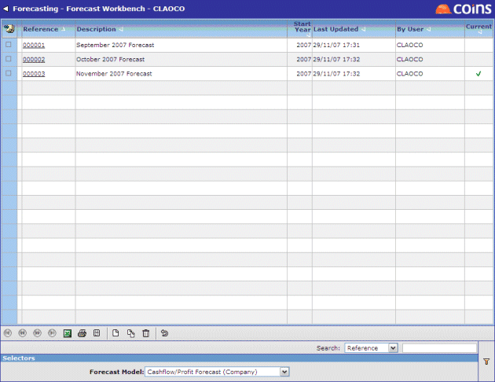

Forecasting data is pulled from across (filtered by the system) when new forecasts are created on the Forecast Workbench. The workbench uses screen layouts devised in user-definable forecast models. Data on the Forecast Workbench can be filtered according to its model type, using the Forecast Model selector at the bottom of the screen.

NOTE
Forecasts can be created either at or group level.
To create a new forecast:
Go to Forecast Models to set up the forecast models you want to use. This determines the type of forecast, the views it consists of, and which are key views. See Forecast Setup.